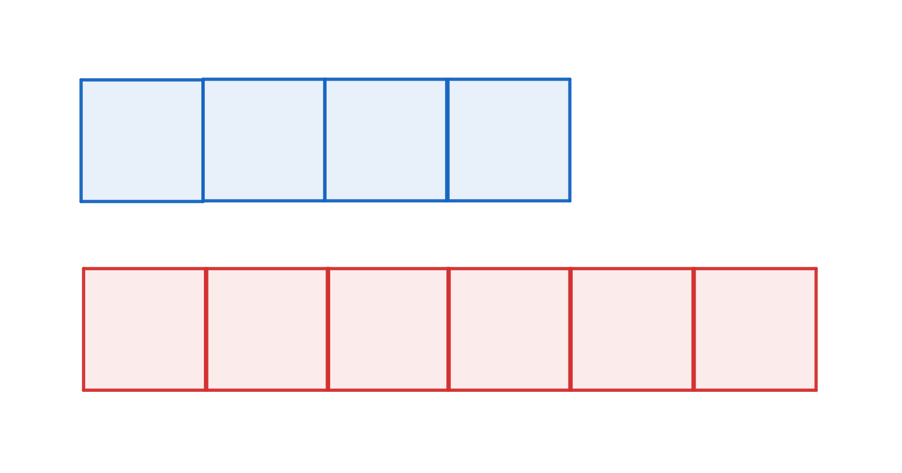
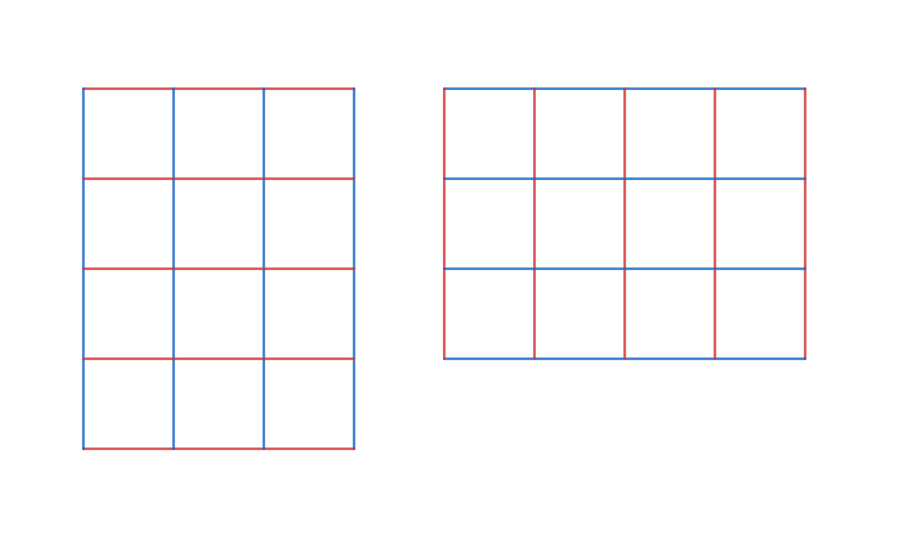
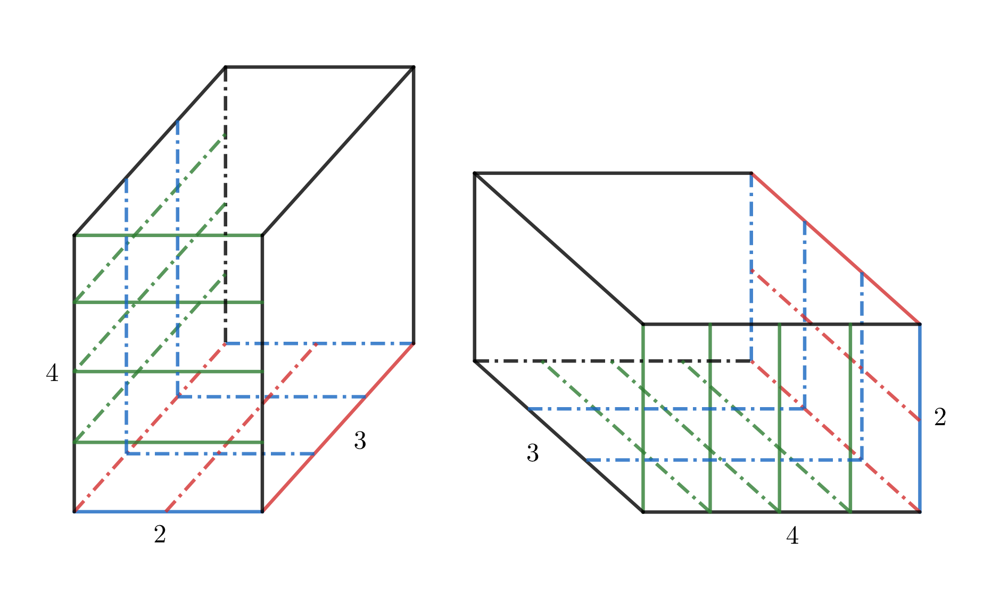
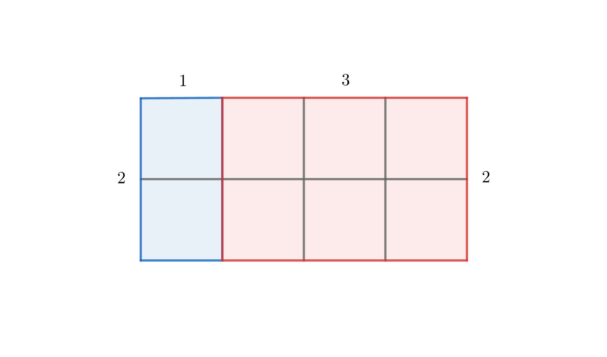

Μαθηματα - Μαθηματικα Α' Γυμνασιου
Μάθημα 01ο (φυσικοί αριθμοί)
Λίγα λόγια για τους φυσικούς αριθμούς
Οι «φυσικοί αριθμοί» είναι το πρώτο είδος «αριθμών» που μελετήθηκαν από την ανθρωπότητα, και ουσιαστικά αποτέλεσαν μια πρώτη ιδέα για το τι αντιλαμβανόμαστε εμείς ως «αριθμούς».
Τι είναι «αριθμός»; Κατ' αρχάς να ξεκαθαρίσουμε ότι η δυνατότητα αντίληψης των αριθμών δεν είναι καθαρά ανθρώπινη δυνατότητα. Έχει παρατηρηθεί και σε άλλα ζώα στη φύση, όπως στους πιθήκους και στα δελφίνια. Επομένως, η δυνατότητα το να κατανοεί κανείς αριθμούς είναι κάτι διαισθητικό και (σε έναν βαθμό) έμφυτο.
Γενικά οι αριθμοί εκφράζουν ποσότητες: Πόσα μήλα αγόρασα από τον μανάβη, πόσα μυρμίγκια υπάρχουν σε μια φωλιά, πόσα μέτρα χρειάζεται να περπατήσω για να φτάσω στο λιμάνι, πόσα κουταλάκια ζάχαρη πρέπει να βάλω στον καφέ. Ειδικότερα, φυσικοί είναι οι αριθμοί που εμφανίζονται συχνότερα στην φύση: το πλήθος των φρούτων σε ένα δέντρο είναι φυσικός αριθμός, όπως είναι και το πλήθος των κόκκων άμμου στην παραλία. Επομένως οι αριθμοί (για παράδειγμα) \(45\) και \(1252\) είναι φυσικοί. Ο αριθμός \(12,5\) δεν είναι φυσικός - σκεφτείτε ότι δεν είναι πιθανό (λόγου χάρη) να βρούμε \(12,5\) μήλα σε ένα δέντρο.
Ποιοί είναι λοιπόν οι φυσικοί αριθμοί; Είναι οι αριθμοί:
$$1,2,3,4,5,6,7,8,9,10,11,12,13,\cdots$$
Τα κόμματα διαχωρίζουν τους αριθμούς μεταξύ τους, δεν είναι υποδιαστολές. Επίσης, το «\(\cdots\)» δηλώνει ότι συνεχίζουμε αναλόγως.
Προσοχή τώρα στα εξής δύο.
- Κανείς θα μπορούσε να αναρρώτηθεί το εξής: «Είναι δυνατόν να απομακρυνθώ \(12,5\) μέτρα από το λιμάνι, οπότε επειδή αυτή η απόσταση υπάρχει στη φύση, ο αριθμός \(12,5\) υπάρχει στη φύση. Μάλιστα μπορώ (αν το καλοσκεφτώ) να δω ότι εμφανίζεται και πολύ συχνά στην φύση με αυτόν τον τρόπο. Είναι το \(12,5\) φυσικός;». Εδώ εισάγεται η έννοια του μέτρου, η οποία είναι ανθρώπινο δημιούργημα. Οπότε η απάντηση είναι σαφής: το \(12,5\) δεν είναι φυσικός αριθμός. Αν κανείς ήθελε να χρησιμοποιήσει μόνο την φύση για να μετρήσει αποστάσεις, θα μπορούσε (για παράδειγμα) να πει «βρίσκομαι \(42.000.000\) κόκκους άμμου μακρυά από την θάλασσα». Το \(42.000.000\) τώρα είναι φυσικός αριθμός.
- Όταν λέμε ότι οι φυσικοί αριθμοί είναι οι \(1,2,3,4,5,6,\cdots\), δεν εννοούμε ότι οι αριθμοί είναι τα σύμβολα \(1,2,3,4,5,6,\cdots\), αλλά αυτό που αντιπρoσωπεύουν αυτά τα σύμβολα. Ας δούμε με ένα παράδειγμα τι σημαίνει αυτό. Πριν δημιουργηθούν τα σύμβολα που χρησιμοποιούμε για τους αριθμούς, οι τσοπάνιδες μετρούσαν τα πρόβατά τους με τον εξής τρόπο: Για κάθε πρόβατο που έβλεπαν στο χωράφι, έβαζαν σε ένα δοχείο ένα πετραδάκι. Το πλήθος των προβάτων και το πλήθος των πετρών στο κουβαδάκι θα πρέπει να είναι ίδια. Εάν ένας σύγχρονος άνθρωπος πήγαινε με μια χρονομηχανή στον προϊστορικό τσοπάνη, θα μετρούσε και θα έγραφε σε ένα χαρτάκι (για παράδειγμα) \(50\) πρόβατα. Αυτό θα έπρεπε να συμφωνεί βέβαια με το πλήθος των πετρών. Οπότε δεν έχει σημασία πώς συμβολίζουμε πόσα πρόβατα έχουμε, παρά μόνο το πλήθος τους. Αυτό το πλήθος είναι ο αριθμός των προβάτων.
Φυσικοί αριθμοί και σύνολα
Στα μαθηματικά πολλές φορές μας αρέσει να βάζουμε παρόμοια αντικείμενα σε σύνολα, και να συμβολίζουμε αυτά τα σύνολα με διάφορα σύμβολα. Ας θυμηθούμε όμως πρώτα τι είναι ένα σύνολο.
Γενικά στα μαθηματικά το σύνολο είναι κάτι τόσο βασικό που δεν το ορίζουμε, αλλά ας μην μπούμε σε λεπτομέριες και μπερδευτούμε. Στο μυαλό μας θα έχουμε το σύνολο ως μια συλλογή από αντικείμενα. Δεν είναι ανάγκη αυτά τα αντικείμενα να μοιάζουν μεταξύ τους, απλώς εμείς συνήθως (για ευκολία) βάζουμε πράγματα που μοιάζουν σε ένα σύνολο. Σκεφτόμαστε το σύνολο ως σακουλάκι.
Αν το σακουλάκι δεν έχει τίποτε μέσα, γράφουμε \(\{\}\). Αν το σακουλάκι έχει έναν κύκλο μέσα, γράφουμε \(\{\circ\}\). Αν έχει ένα τρίγωνο, γράφουμε \(\{\triangle\}\). Αν έχει ένα τρίγωνο και ένα τετράγωνο, γράφουμε \(\{\triangle, \square\}\). Παρατηρήστε ότι για να ξεχωρίσουμε τα αντικείμενα που βάζουμε στο σύνολο, μεταξύ τους βάζουμε κόμμα. Οπότε, το σύνολο των φυσικών είναι το σύνολο: $$\{1,2,3,4,5,6,7,8,9,10,11,12,13,\cdots\}$$ το οποίο το συμβολίζουμε με το όμορφο γράμμα \(\mathbb{N}\). Δηλαδή: $$\mathbb{N} = \{1,2,3,4,5,6,7,8,9,10,11,12,13,\cdots\}$$ Κάτι που μπορεί να φαίνεται περίεργο είναι το εξής: Πείτε ότι έχουμε δύο ίδια τετράγωνα \(\square, \square\). Είναι το σύνολο \(\{\square\}\) διαφορετικό από το \(\{\square, \square\}\); Μπορεί να λέγαμε ότι δεν είναι ίδια, αφού το ένα έχει ένα αντικείμενο και το άλλο δύο. Στην πραγματικότητα όμως, τα σύνολα είναι ίσα - μας ενδιαφέρει σε ένα σύνολο τα διαφορετικά πράγματα που βάζουμε μέσα και όχι οι επαναλήψεις. Επίσης, το σύνολο \(\{\triangle, \square\}\) είναι ίδιο με το \(\{\square, \triangle\}\), γιατί ούτε η σειρά μας νοιάζει.
Γενικά δύο σύνολα είναι ίδια αν έχουν τα ίδια αντικείμενα μέσα, αγνοώντας τις επαναλήψεις και τη σειρά.
Παραδείγματα:
- \(\{\square\} = \{\square, \square\}\)
- \(\{\triangle, \square\} = \{\square, \triangle\}\)
- \(\{1, 2\} = \{2, 1\}\)
- \(\{\triangle, \square\} = \{\triangle ,\triangle, \square\}\)
- \(\{1\} = \{1,1\} = \{1,1,1,1\}\)
- \(\{1,2\} = \{1,1,2\} = \{1,1,2,2\}\)
- Αντίθετα, το \(\{1\}\) δεν είναι ίδιο με το \(\{1,2\}\), αφού το τελευταίο περιέχει το \(2\), και το \(2\) δεν περιέχεται στο πρώτο σύνολο.
Κάποιες φορές μας βολεύει να θεωρούμε και το \(0\) φυσικό αριθμό. Αυτό δεν μας αγχώνει, αν χρειάζεται να λέμε ότι το \(0\) είναι φυσικός, θα το λέμε. Αν πάλι δεν χρειάζεται ή δεν θέλουμε, δεν θα το λέμε.
Ιδιότητες των φυσικών αριθμών
Οι φυσικοί αριθμοί έχουν κάποιες γνωστές ιδιότητες. Κατ' αρχάς, υπάρχουν μεταξύ αυτών οι γνωστές πράξεις «\(+, \cdot\)». Επιπλέον:
- Η πρόσθεση είναι «αντιμεταθετική». Δηλαδή δεν έχει διαφορά με ποιά σειρά προσθέτουμε: παράδειγμα, \(4+6 = 6+4\). Με γενικότερο συμβολισμό κανείς γράφει \(α+β = β+α\). Αυτό κανείς μπορεί να το δει και γεωμετρικά: φανταστείτε ότι θέλουμε να προσθέσουμε \(4+6\) κουτάκια, όπως στο σχήμα:

έτσι ώστε να φτιάξουμε μια γραμμή. Δεν έχει σημασία αν θα βάλουμε πρώτα τα μπλε και μετά τα κόκκινα ή το αντίστροφο, εν τέλει η γραμμή θα είναι το ίδιο μεγάλη. Οπότε, \(4+6 = 6+4\). - Η πρόσθεση είναι «προσεταιριστική». Δηλαδή, αν έχουμε τρεις αριθμούς, δεν έχει σημασία με ποιά σειρά θα τους προσθέσουμε. Μπορούμε να προσθέσουμε τους δύο πρώτους και μετά τον τρίτο, ή τον δεύτερο και τον τελευταίο και μετά τον πρώτο. Για παράδειγμα, για να υπολογίσουμε το \(1+3+2\) μπορούμε να γράφουμε: \(1+3=4\) και \(4+2=6\), άρα \(1+3+2=6\). Αλλιώς, \(3+2=5\) και \(5+1=6\), άρα \(1+3+2=6\). Σκεφτείτε με κουτάκια πώς ερμηνεύεται αυτό γεωμετρικά. Για να δείξουμε με ποιά σειρά κάνουμε τις πράξεις, συνήθως βάζουμε παρενθέσεις. Ό,τι είναι στην παρένθεση γίνεται πρώτο. Για να κάνουμε την πρόσθεση \(1+3+2\) όπως στην πρώτη περίπτωση, γράφουμε \((1+3)+2\). Αντίστοιχα για την δεύτερη περίπτωση, \(1+(3+2)\). Γενικά λοιπόν η προσεταιριστική ιδιότητα της πρόσθεσης έχει τη μορφή \((α+β)+γ = α+(β+γ)\).
- Ο πολλαπλασιασμός είναι «αντιμεταθετικός». Δηλαδή δεν έχει σημασία η σειρά με την οποία γίνεται ο πολλαπλασιασμός: παράδειγμα, \(3 \cdot 4 = 4 \cdot 3\). Με γενικότερο συμβολισμό κανείς γράφει \(α \cdot β = β \cdot α\). Γεωμετρικά υπάρχει η εξής ερμηνεία: γνωρίζουμε ότι ένα ορθογώνιο παραλληλόγραμμο με πλευρές \(α,β\) έχει εμβαδόν \(α \cdot β\). Οπότε, αν για παράδειγμα φτιάξουμε ένα οθογώνιο παραλληλόγραμμο με πλευρές \(3, 4\), τότε θα έχει εμβαδόν \(3 \cdot 4\), ενώ αντίστοιχα ένα ορθογώνιο παραλληλόγραμμο με πλευρές \(4,3\) θα έχει εμβαδόν \(4 \cdot 3\).

Παρατηρήστε ότι τα δύο παραλληλόγραμμα είναι ουσιαστικά τα ίδια, μόνο το δεύτερο είναι κάπως περιεστραμμένο. Οπότε έχουν το ίδιο εμβαδόν και κατ' επέκταση \(3 \cdot 4 = 4 \cdot 3\). - Ο πολλαπλασιασμός είναι «προσαιρετιστικός». Δηλαδή, αν έχουμε τρεις αριθμούς, δεν έχει σημασία με ποια σειρά θα πολλαπλασιάσουμε. Μπορούμε να πολλαπλασιάσουμε τους δύο πρώτους και μετά τον τρίτο, ή τον δεύτερο και τον τελευταίο και μετά τον πρώτο. Δηλαδή, \((α \cdot β) \cdot γ = α \cdot (β \cdot γ)\). Αυτή η ιδιότητα μοιάζει πολύ με την αντίστοιχη της πρόσθεσης. Γεωμετρικά μπορούμε να το σκεφτούμε με όγκους ορθογώνιων παραλληλεπιπέδων. Δείτε ενδεικτικά το παρακάτω σχήμα, για τον πολλαπλασιασμό \((2 \cdot 3) \cdot 4 = 2 \cdot (3 \cdot 4)\).

- Ο πολλαπλασιασμός «επιμερίζει» την πρόσθεση. Αυτή είναι μια ιδιότητα σημαντική, οπότε θέλει προσοχή. Ουσιαστικά μας δείχνει έναν άλλον τρόπο για να «σπάμε» παρενθέσεις. Δείτε το εξής: αν είχαμε να κάνουμε την πράξη \(2 \cdot (1+3)\), θα έπρεπε κανονικά να κάνουμε πρώτα την πράξη στην παρένθεση και μετά τον πολλαπλασιασμό (όπως λένε οι κανόνες). Δηλαδή θα κάναμε \(1+3=4\) και \(2 \cdot 4 = 8\), άρα \(2 \cdot (1+3) = 8\). Ο επιμερισμός μας δίνει κι έναν άλλον τρόπο να κάνουμε τις πράξεις - πρώτα θα πολλαπλασιάσουμε το δύο με καθέναν όρο της παρένθεσης, και μετά θα προσθέσουμε τα αποτελέσματα. Δηλαδή θα κάνουμε \(2 \cdot 1 = 2\) και \(2 \cdot 3 = 6\) και \(2+6=8\). Γενικά γράφουμε λοιπόν \(α \cdot (β+γ) = (α \cdot β)+(α \cdot γ)\). Και αυτή η ιδιότητα έχει γεωμετρική ερμηνεία: αν για παράδειγμα φτιάξουμε ένα ορθογώνιο παραλληλόγραμμο με πλευρές \(2\) και \(1+3\), θα έχει εμβαδόν \(2 \cdot (1+3)\).

Το ορθογώνιο παραλληλόγραμμο αυτό μπορούμε να το χωρίσουμε σε δύο μικρά ορθογώνια παραλληλόγραμμα, το ένα με πλευρές \(2\) και \(1\), και το άλλο με πλευρές \(2\) και \(3\). Το πρώτο έχει εμβαδόν \(2 \cdot 1\), το δεύτερο \(2 \cdot 3\), και μαζί έχουν εμβαδόν όσο το μεγάλο παραλληλόγραμμο. Επομένως \(2 \cdot (1+3) = (2 \cdot 1)+(2 \cdot 3)\).
Δυνάμεις και τάξεις μεγέθους
σsss Μάθημα 02ο (διαιρετότητα, ε.κ.π. και μ.κ.δ.)
sss
Μάθημα 03ο (το θεμελιώδες θεώρημα της θεωρίας αριθμών)sss